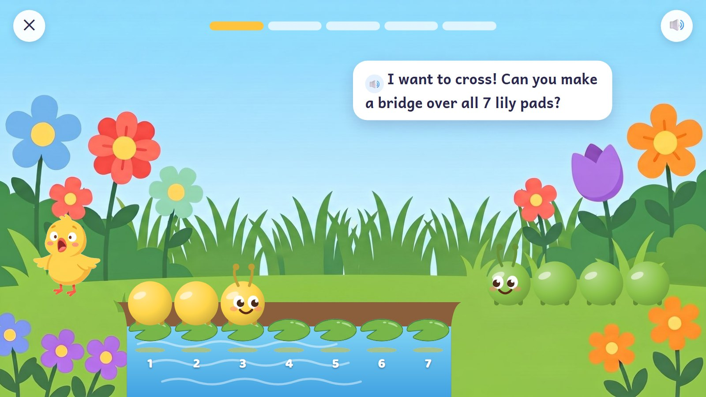
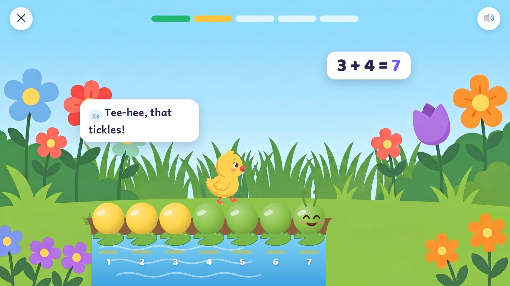
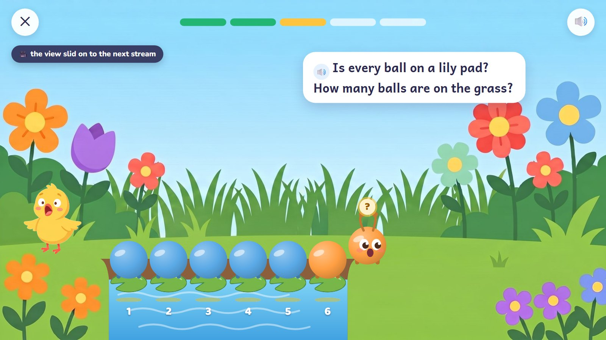
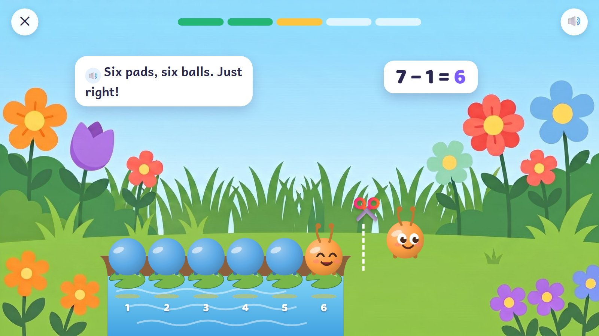
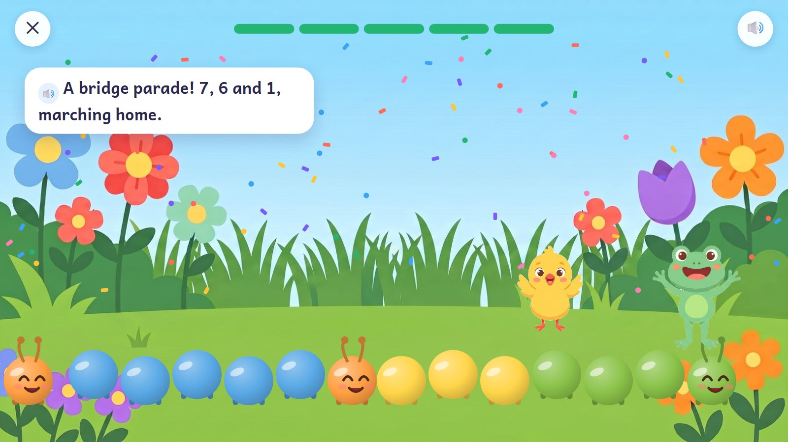

Caterpillar Bridges
A caterpillar of 3 balls IS three. A stream is exactly 7 lily pads wide: join caterpillars into a bridge that fills every pad, one ball per pad, and the chick walks across. Snip extra balls off when a bridge is too long. The number sentence appears only after the child has done it.
K–Grade 1 · ages 5–7 E09 Join and split + E07 Number-line hops
Skill: Add and take away within 10 (then 20) by joining and separating. One activity is 5 rounds, about 90–150 seconds.
🎉 The fun
Living numbers that snap together into a bridge; the chick walks across and it tickles; snipping.
🎥 The view
Sideways: after each bridge, on to the next stream.
🎆 The finale
A bridge parade: every caterpillar marches home, still its own number.
Six moments

1The gap
The stream is 7 lily pads wide. The 3 already lies on the first three pads; a 4 waits on the far bank.
🔊 "I want to cross! Can you make a bridge over all 7 lily pads?"
Behind the scenes: Each pad is one equal space, from 0 to 7. Nothing ever stretches.

2Join
The child drags the 4 onto the 3's head. They snap into one caterpillar of 7, one ball on every pad, each ball counting itself.
🔊 "One, two, three… seven! A bridge all the way across!"
Behind the scenes: The colours stay mixed, so the 3 and the 4 can still be seen inside the 7.

3Across, then the sentence
The chick walks over on the caterpillar's back. Only now does 3 + 4 = 7 appear.
🔊 "Tee-hee, that tickles!"
Behind the scenes: The written sum comes after the action.

4The next stream: a wrong try
The view has slid on: this stream is 6 pads. A 7 was laid across, so one ball rests on the grass beyond.
🔊 "Is every ball on a lily pad? How many balls are on the grass?"
Behind the scenes: The extra ball stays in view; a bridge that is too short leaves empty pads. A thinking tip, never the answer.

5Snip!
The child snips off the extra ball. It becomes a little 1 of its own, still there on the bank. 7 − 1 = 6.
🔊 "Six pads, six balls. Just right!"
Behind the scenes: In taking away, the part taken stays in view.

6The bridge parade
Every caterpillar marches home along the bank; confetti.
🔊 "A bridge parade! 7, 6 and 1, marching home."
Behind the scenes: No butterflies at the end: changing numbers into something else would blur the idea that a caterpillar IS its number.
The frames are mock-ups: Gemini's drawings (backgrounds, friends, things) and shapes and numbers drawn by code, put together as the app would at run time. In the app everything moves; here it stands still.
How it changes
| What changes | Range |
|---|---|
| Target | 2–10, then 11–20 with a ring of ten |
| Action | join, snip, or both |
| Unknown | the result (3 + 4 = ?), the change (3 + ? = 7) or the start (? + 4 = 7) |
| Help | every pad numbered → only the last pad → no numbers |
| Planned activities | E09: 100 planned cards; E07 adds hops along a track |
From a model to a word problem
| Step | In this activity |
|---|---|
| 1. See it | Both caterpillars are shown and every pad is numbered. |
| 2. Fill one part | A 4 is already on the pads; choose the caterpillar that finishes the 7-bridge. |
| 3. On your own | Build the bridge from loose balls. |
| 4. Check it | "Frog says 5 + 3 fills this 9-pad stream. Is he right?" Fix it with a snip or a join. |
| 5. Word problem | "Owl had 6 berries and ate 2." The caterpillars act it out. |
Wrong answers we expect, and what happens
| Mistake | Looks like | What happens (never red, never "wrong") |
|---|---|---|
| Counts a pad twice | the first pad and the next | the balls count themselves, one each |
| Joins by colour | picks the caterpillars that match | "Colours don't mean numbers. Count the balls!" |
| Snips the wrong end | the bridge no longer starts at the first pad | a bridge always starts at the first pad |
| Adds instead of taking away | reads the story the wrong way round | "Did it get longer or shorter?" |
What it needs
- The garden (drawn); the stream and lily pads (code and a drawn pad)
- The number caterpillars, drawn by code
- The chick in four poses (drawn)
- Voice: asks, counting to 20, 6 tips, the sums read aloud
Test robot: Reads the width of the gap from the question and counts the balls it can see. It joins or snips to fit, then checks every pad is filled exactly once and the sum matches what it did.